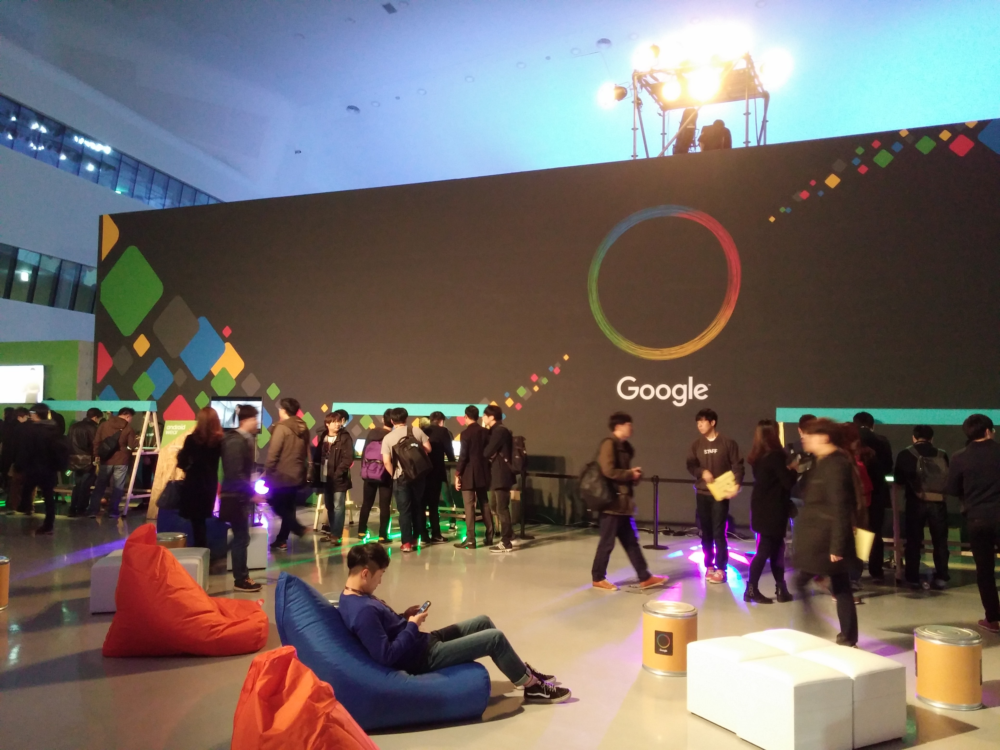
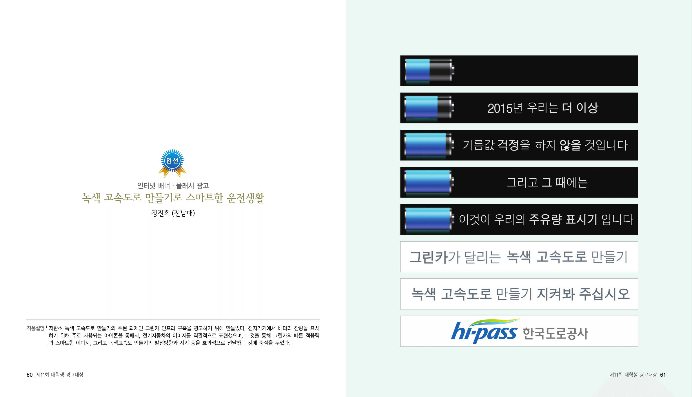
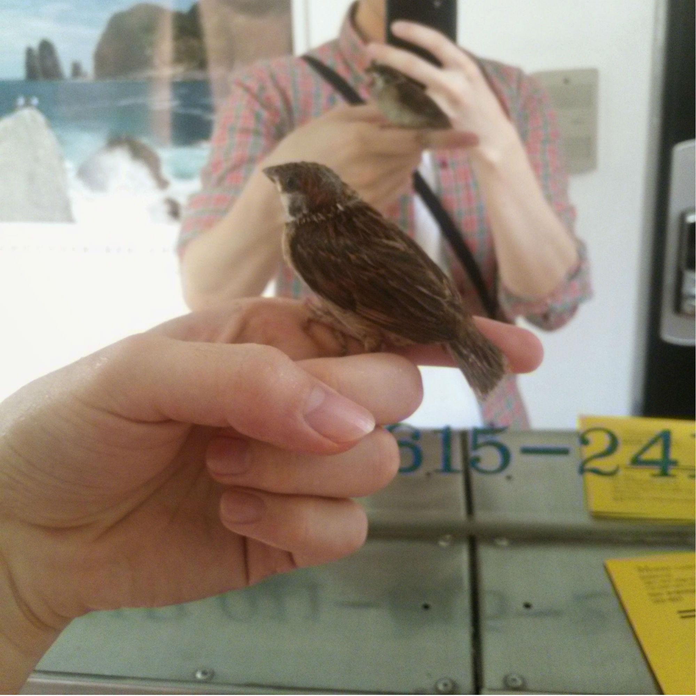

build제작
- 이건 집에서만 입자
- 티셔츠에 그림 그리고 입어보기.2014.08.08.
다른 디자인으로도 몇 장 더 만들었지만, 역시 집에서밖에 입을 수가 없었다 ㅋ
- !nameless
- 가구 만들기.
- !nameless
- 건물 짓기.
- 대학 나온 보람이 있네
- 연료를 이용해 추진하는 로켓 만들고, 날리기.
- 눈 내린다!
- 사람 크기의 눈사람 만든 뒤 어깨동무하고 셀카찍기.
- 너무 많이 오는데?
- 사람이 들어갈 수 있는 크기의 이글루 만들기.
- 뭔가 일이 진행되는 느낌
- 뒷면 사진을 참고하여 멋지게 벽을 꾸미기.

computer컴퓨터
- 이거 말고 영어 공부를 했어야...
- 프로그래밍 언어 습득 후 응용 프로그램 제작.2010.10.10.
2010년 처음으로 윈도용 응용프로그램을 만듦. 계산기 같은 거였는데, C#으로 만들었음.
찾아보니까 있어서 기념으로 첨부함.
- 태세 전환
- 모바일 앱 만들기. 2013.02.28.
이거 만들었다.
- 이력서에 한 줄 추가요
- 단일 앱 다운로드 10,000 회. 2014.04.26.
- 인기 개발자
- 단일 앱 다운로드 1,000,000 회.
- 무료 앱에 광고를 넣는 게 좋다
- 앱 다운로드 합계 1,000,000 회.
- 내가 막 뭐라도 된 듯
- 구글 행사에 개발자 자격으로 참가하기.2015.11.24.
회사명에 (27세, 무직) 이라고 적어서 신청했더니 회사명이 없는 이름표를 뽑아놨더라.
딱 3달 전에 구글 행사장 설치 보조 알바하고 있었는데, 감회가 새로웠다.
- 강박 관념
- 1개의 게임에서 도전 과제 100% 달성하기.2014.01.02.
- 편집증
- 10개의 게임에서 도전 과제 100% 달성하기.2015.
- 업적 성애자
- 50개의 게임에서 도전 과제 100% 달성하기.
관대한 갓스팀에서 무료로 뿌린 Portal을 시작으로, 현재 스팀기준 23개의 게임을 정복. 아래에 재밌게 했던 것들을 나열함.
- Batman: Arkham Asylum
- BioShock Infinite
- BioShock Infinite: CinC
- The Bureau: XCOM Declassified
- Guacamelee! Gold Edition
- Guacamelee! Super Turbo Championship Edition
- Mark of the Ninja
- Papers, Please
- Portal
- Surgeon Simulator
- Wolfenstein: The New Order
- 압도적 스케일
- 32인치 모니터 구입후 최신 게임 즐기기.
- 이제 양손이 다 찍히는군
- 액션 캠 구입 후 역동적인 동영상 촬영하기.
color_lens예술
- 브레멘 음악대
- 다음 악기로 최소한 한가지 곡 완주.
-
- 기타
2012. -
- 바이올린
-
- 트럼팻
-
- 피아노
-
- 드럼
-
- 참쉽죠?
- 이름있는 기관에서 주최한 공모전 당선.2011.07.04
한국도로공사 공모전(디자인)에서 아슬아슬하게 입선.
group커뮤니티
- 사이버 세상의 주민
- 홈페이지(블로그) 만들기. 2007.03.22.
- 블로거
- 홈페이지 총방문자 10,000 명. 2007.07.
- 파워 블로거
- 홈페이지 총방문자 1,000,000 명. 2012.01.
- 1인 언론
- 홈페이지 총방문자 100,000,000 명.
방문자 300만을 찍은 이후에 방치하고 있다.
- "오늘은 선물 받은 ~을" → "~은 업체에서 줬다"
- 대가를 받고 게시물 작성. 2011.06.25.
- "비밀 아이템" → "공짜로 줘서 쓰긴 하지만 난생 처음 본 제품"
- 대가를 받고 게시물 작성 10회.
- "편하게 휴대 가능" → "양이 적음"
- 대가를 받고 게시물 작성 100회.
- "니가 뭔데 걔 싸이홈피에 친한척 하냐?" - by 꿀겨
- 인터넷 친구 100명 사귀기. 2012.
- "친구는 인터넷 친구가 있어요" - by 책사풍후
- 인터넷 친구 1000명 사귀기.
이 버킷리스트를 도와주실 분은 여기로 가서 친구 추가 버튼을 꾹 눌러주셈.
- 좋아요
- 소셜 공유 1,000 회.
- 현실에서도 일 좀 하지?
- 소셜 공유 100,000 회.
- 가문의 영광
- 디시인사이드 힛갤에 입개르.2015.03.25.
- !nameless
- 힛갤곤볼 7성구 획득.
버킷리스트로 도전했던 자전거 여행...을 찍은 영상으로 힛갤 입성함.
- 지구촌
- 외국인 펜팔 친구 만들고 일 년 이상 관계 유지하기.
뭐... 외국인들도 눈이 있으니까...
- 유명인사
- TV 출연하기.
- 영상 업적 1티어
- 단일 유투브 동영상 조회수 100,000 회.
- 영상 업적 2티어
- 단일 유투브 동영상 조회수 10,000,000 회
extension기타
- 재귀함수
- 버킷리스트 항목 .25 완료하기.
- 피드백 제어
- 버킷리스트 항목 .5 완료하기.
- 악성 버킷리스트
- 버킷리스트 항목 .75 완료하기.
- 디버깅용 항목
- 네, 아름다운 숫자 1 바로 그거입니다.
- ~을(를) 주운 것이 자랑
- 다음 목록의 생물 줍기
-
- 조류
-
- 조류: 천연기념물
-
- 조류: 맹금류
-
- 포유류
-
- 파충류
-
- 미아
-
- 외국인
-
- 외계인
-
- 취객
-
- 노숙자
-
- 범죄자
-
새줍 같이 쉬운 건 대충 끝났고 이제 어려운 것들만 남았구만.
파충류는 도마뱀을, 포유류는 두더지를 주운 적이 있음.
- 주인공 되기
- 메달을 받아서 자신의 쓸모있음을 증명하기.2015.
영화 주먹왕 랄프를 봤음. 주인공인 랄프가 메달이 갖고 싶어서 이리저리 뛰어다닌다는 스토리. 보고나서는 '메달 하나 가지려고 저 고생을... 모자란 놈 같으니...'라고 생각했음.
근데... 다음날 부터 메달이 엄청나게 갖고 싶어서 일이 손에 안 잡힘! 으악!!!!
그래서 메달 받기 프로젝트에 돌입. 처음엔 단축마라톤 참가상으로 받아낼 생각이였지만 저질 체력으로 인한 지구력 부족으로 포기. 인터넷 찾아보던 중 자전거로 인천에서 부산까지 가면 메달준다고 하길래 바로 자전거 구입함.
결국 메달 받아서 잘 모셔놓음^^ 해피엔딩.